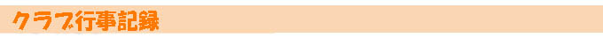
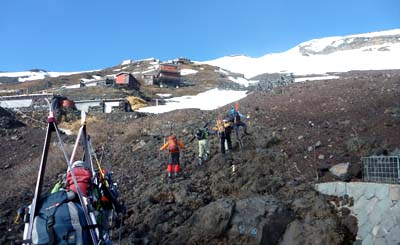
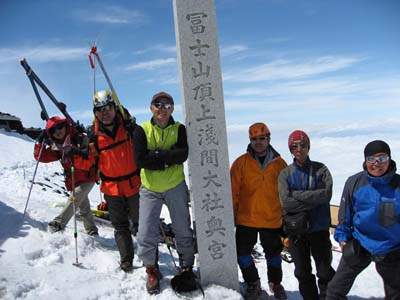
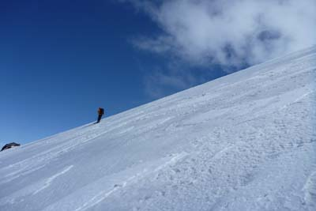

|
|||||||||||||||||||||||||||
|
|||||||||||||||||||||||||||
|  |
|
20周年記念富士山山スキー ――吉田大沢を滑る―― |
| 開 催 日 | ２０１０年２月２９〜３０日 | |||
| リーダー | 中川 武 | |||
| 報 告 者 | 中川、高井（紀） | |||
| HP制作者 | 高井（紀） | |||
| 参加者数 | ２１名(会員：16名、ゲスト：5名) | |||
| 毎年行っている富士山だが、今年はASC創立２０周年にあたる年だ。 昨年プレ２０周年をやったばかりなので普段どおりの富士山を楽しもうと思う。 毎年思うことだが、参加者は断然地方の方が多い。そして思い入れも強く、前向きである。 青森から、盛岡から、仙台から、福井から、越後から、はるばるやってきて、気合を入れてのぼっている。そんな仲間たちをみていると思わず嬉しくて笑みがこぼれてしまう。 雨の予報が外れ、快晴無風の富士山を満喫することができた。 |
| ５月２９日 |
| 恒例の前夜祭。 ご馳走は築地から直送の魚介類、現地調達の馬刺し etc〜盛り沢山！ 仲間との団欒は中でも最高！ |
| A | ||
| 夕方から雨との予報だったが。富士山がこんな近くに見えていた | 参加者は三々五々佐藤小屋に集まる。だんだん曇ってきた〜 |
| A | ||
| 佐藤小屋での宴会 ２０周年の乾杯の音頭は川合さん | ||
| A | ||
| 佐藤小屋の主人、保さんへ２０周年の記念品「ホイッスル」とお礼のTシャツ贈呈 | ||
.jpg) |
A | |
| 夕刻 「今、富士山が見えているよ！」との保さんの声に、一斉に外へ飛び出す(17:20) | ||
| ５月３０日 |
| 天気は無風快晴 ASCも高齢化が進み、行きたいが体力に自信のない人たちのために８合目隊を作った。 頂上隊からの途中合流も出来る。 |
| A班（11名）・・・頂上隊：滑降リーダー：平野 佐藤小屋（2230m)5:30→花小屋(2700m)→太子堂(3040m)アイゼン装着→天拝宮(3250m)→本八合(3370m)→3440m →吉田口頂上(3710m) 到着時間：12:40〜13:50 登りの休憩時間：約2.5時間 頂上出発14:00→→吉田大沢→→終了地点(2750m)14:40〜(スキー外す）解散 佐藤小屋、駐車場へそれぞれ下る 最終者到着時間：16:45 |
| A |
| B班（８名）・・・八合目隊：リーダー：安井 佐藤小屋（2230m)5:30→六合目→七合目→八合目→八合半→太子堂出発11:30→→吉田大沢→→七合目→佐藤小屋 最終者到着時間：15:00 |
| A |
| C班（3名）・・・小屋に残り、行動隊との連絡、片付け、近辺の散策 |
| 前夜の天気予報は雨。雨を覚悟していたがこの天気に！！！ |
| 出発前の集合写真。思いがけない天気にニコニコ顔が並びます |
| A |  | |
| 青空の下、元気に出発！2230m 5:30 | しばらく夏道を行く |
| A | ||
| 七合目の小屋がある辺りから雪が出てきた | 3000m付近でアイゼンをつけて登る |
| A | ||
| 天拝宮：3250m | .本八合目 雲海を眺め一息：3370m. |
| A | ||
| 3440m地点。下は雲しか見えない | ９合目から頂上への登り |
|  | A | |
| 富士吉田口山頂：3710m 。2時には滑り出さないと斜面がクラストして危険なので、遅い到着組は直ちにスキーを付け滑る準備に入る | ||
| 吉田大沢を滑る |
| A | ||
| 雪面がクラストするぎりぎりに間に合って滑り出す | 滑っていく方向は雲があるが、視界は良好 |
|  | A | |
| 雲の上にいるから空は抜けるように青い。雪質はとてもいい。 | ||
| 無風快晴の中、標高差約1000mを滑り降りる |
| A | ||
| 八合目近辺を滑るB班のメンバー | ||
| GPSの記録 |
| A | ||
| GPSトラック地図（南北が逆の表示になっています）――：スキー ――：歩き ※ 左の地図をクリックすると拡大します。(2回） |
||
| 今年の富士山の天気は最後までよかった。毎年通っているといいこともある。 ４時頃ほぼ全員がお中道に到着。無事に富士山のスキーが終わった。 ※写真は参加者のご協力を頂きました。お礼申し上げます。 |